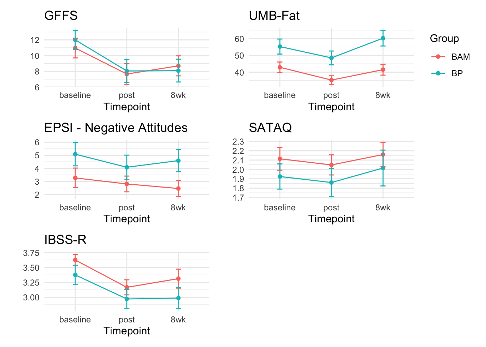

5 Intervention Effects
6 Intervention Effects

Figure 2. Intervention Effects.
| Measure | Construct | group | Mean baseline | Mean post | Mean 8wk | Baseline to Post (Cohen's d) | Baseline to 8wk (Cohen's d) |
|---|---|---|---|---|---|---|---|
| GFFS | Fatphobia | BAM | 10.96 (6.39) | 7.65 (6.7) | 8.69 (6.49) | -0.51 | -0.35 |
| GFFS | Fatphobia | Body Project | 12 (5.94) | 8.04 (7.02) | 8.09 (7.1) | -0.61 | -0.60 |
| UMB-Fat | Anti-fat bias | BAM | 42.94 (15.91) | 35.31 (13.04) | 41.5 (16.63) | -0.52 | -0.09 |
| UMB-Fat | Anti-fat bias | Body Project | 55.25 (21.88) | 48.5 (20.14) | 60.25 (22.79) | -0.32 | 0.22 |
| EPSI Subscale | Negative attitudes toward obesity | BAM | 3.27 (3.83) | 2.81 (3.07) | 2.46 (3.13) | -0.13 | -0.23 |
| EPSI Subscale | Negative attitudes toward obesity | Body Project | 5.08 (4.37) | 4.08 (4.54) | 4.59 (4.12) | -0.22 | -0.12 |
| SATAQ | Thin ideal internalization | BAM | 2.11 (0.62) | 2.05 (0.55) | 2.16 (0.66) | -0.11 | 0.07 |
| SATAQ | Thin ideal internalization | Body Project | 1.92 (0.66) | 1.86 (0.73) | 2.02 (0.94) | -0.09 | 0.11 |
| IBSS-R | Thin ideal internalization | BAM | 3.62 (0.46) | 3.17 (0.64) | 3.31 (0.81) | -0.82 | -0.47 |
| IBSS-R | Thin ideal internalization | Body Project | 3.38 (0.77) | 2.97 (0.78) | 2.99 (0.87) | -0.52 | -0.47 |
Table 3. Intervention Effects including means (standard deviations) at all three timepoints and effect sizes.
Cronbach's alpha for the 'gffs_data' data-set
Items: 10
Sample units: 204
alpha: 0.884
Cronbach's alpha for the 'umbfat_data' data-set
Items: 20
Sample units: 204
alpha: 0.914
Cronbach's alpha for the 'sataq_data' data-set
Items: 22
Sample units: 204
alpha: 0.88
Cronbach's alpha for the 'epsi_data' data-set
Items: 45
Sample units: 204
alpha: 0.915
Cronbach's alpha for the 'ibssr_data' data-set
Items: 6
Sample units: 204
alpha: 0.88Fifty participants (BAM: N = 26 (39.39%); BP: N = 24 (36.36%)) completed study activities at all three time points and attended both intervention sessions. Effect sizes were calculated for both BAM and BP among those who completed all study components to assess initial signal of impacts on key intervention targets for both interventions across time points and to benchmark BAM effects against a similarly-delivered BP intervention. To see effect sizes, means, and standard deviations for each group, see Table 3; see Figure 2 for a depiction of changes over time across groups. Both BAM and BP interventions produced reductions in fatphobia (measured via the GFFS) between baseline and post session with medium effect sizes (BAM: d = -0.51; BP: d = -0.61. BP maintained the level of reduction from baseline to 8-week post session (d = -0.6) while the reduction was slightly diminished for BAM participants (d = -0.35). Both the UMB-Fat and the EPSI “Negative Attitudes Toward Obesity” subscale were used to assess anti-fat bias. BAM participants demonstrated a medium reduction at baseline to post session (d = -0.52) while BP participants only demonstrated a small reduction (d = -0.32) on the UMB-Fat. UMB-Fat impacts were not sustained for BAM to 8-week post session on the UMB-Fat (d = -0.09), while BP participants showed an increase in anti-fat bias at this time point (d = 0.22). BAM and BP both showed small reductions on EPSI Negative Attitudes towards Obesity from baseline to post session (BAM: d = -0.13; BP: d = -0.22) and baseline to 8-week post session (BAM: d = -0.23; BP: d = -0.12). Thin ideal internalization was assessed using the SATAQ and IBSS-R measures. Neither BAM nor BP demonstrated a reduction on the SATAQ at either baseline to post session (BAM: d = -0.11; BP: d = -0.09) or baseline to 8-week post session (BAM: d = 0.07; BP: d = 0.11). BAM participants demonstrated large reductions in thin ideal internalization on the IBSS-R at baseline to post session (d = -0.82), while BP participants (d = -0.52) showed moderate reductions; both interventions maintained a similar level of reduction from baseline to 8-week post session (BAM: d = -0.47; BP: d = -0.47).